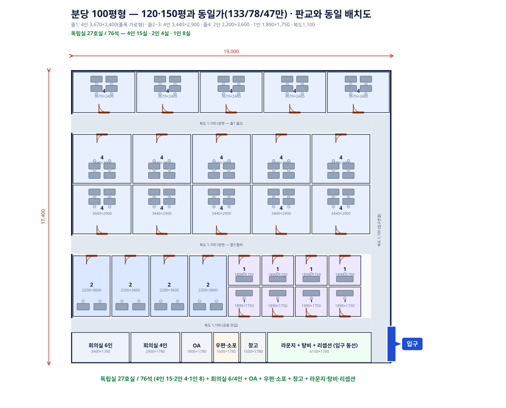

SOS 코워킹 최종보고서
작성일: 2026-07-01 (최종 통합본) · 이 파일 하나로 결론·가격정책·비용검증·배치도·지역경쟁력 원자료를 모두 포함함. 다른 보고서 파일들은 이 파일로 대체됨.
가격정책(하이브리드): 경쟁사가 확인된 지역은 "경쟁사가×할인율" vs "원가+25%마진" 중 더 높은 값 채택(마진 보호 하한). 미확인 신규지역은 원가+25%마진을 기본값으로 사용.
BEP: 판교 53.2% · 분당100평형 66.6% · 분당120평 65.8% · 분당150평 65.3%.
BEP: 판교 53.2% · 분당100평형 66.6% · 분당120평 65.8% · 분당150평 65.3%.
1. 모델 손익 요약
| 모델 | 호실/좌석 | 가격(4/2/1인) | 만실매출 | CAPEX | 월상각 | 월 고정비 | BEP | 50% | 60% | 70% |
|---|---|---|---|---|---|---|---|---|---|---|
| 판교 104평 | 27실/76석 | 178/120/70만 | 3,710만 | 22,764만 | 379만 | 1,747만 | 53.2% | -105만 | +223만 | +551만 |
| 분당 100평형 | 27실/76석 | 128/83/46만 | 2,620만 | 22,960만 | 383만 | 1,544만 | 66.6% | -385만 | -153만 | +79만 |
| 분당 120평 | 33실/90석 | 120/60/40만 | 2,820만 | 26,281만 | 438만 | 1,642만 | 65.8% | -394만 | -145만 | +105만 |
| 분당 150평 | 53실/110석 | 120/60/40만 | 3,620만 | 32,784만 | 546만 | 2,093만 | 65.3% | -491만 | -171만 | +150만 |
산식: 순손익 = 만실매출×점유율×88.5% - 월고정비. 88.5% = 100% - 마케팅7% - PG·환불4.5%. 총투자금(CAPEX+보증금+운전500만): 판교30,764만 / 100평형30,960만 / 120평34,281만 / 150평43,284만.
2. 가격정책 — 산정 방법과 지역별 근거
| 항목 | 내용 |
|---|---|
| 기본 원칙 | price = max(경쟁사가×할인율, 원가+25%마진). 경쟁사가 확인 안 되면 원가+25%마진만 사용. 25%마진 산식 = 좌석당원가(월고정비÷좌석)÷0.635(100%가동 기준), 4인:2인:1인 좌석단가 배율 1:1.3:1.45 |
| 왜 경쟁사 전수조사를 안 하는가 | FF·SP는 지점 위치는 공개하지만 정확한 가격은 투어·상담을 거쳐야 나옴(전화·온라인 문의만으로는 견적을 잘 안 줌). 매번 전 지역 조사가 비현실적 |
| 신규지역 처리 | 공식 지점맵(FF `fastfive_branch_area.csv`, SP `sparkplus_branch_official.csv`)으로 "그 지역에 경쟁사가 있는지"만 무료로 항상 확인 가능. 지점 있으면 밴드 분류, 없으면 cost-plus 기본값. 출점 임박 시 실사(투어)로 재확인 후 조정 |
지역별 가격 산정 상세
| 지역 | 경쟁 구도 | 확인된 경쟁사가 | 할인 로직 | 경쟁사밴드가 | cost-plus가 | 채택 |
|---|---|---|---|---|---|---|
| 판교 | FF만 있음(SP 지점 없음), 규제로 진입장벽 있어 경쟁 얕음 | FF 4인실 실거래 2,224,800원(55.6만/석) 정가 3,090,000(4인)/4,060,000(7인)/5,590,000(10인) | 실거래 대비 약 -20%(경쟁공백이라 할인폭 얕게) | 178만(44.5만/석) | 145만(36.2만/석) | 경쟁사밴드(178만) — 원가보다 높아 마진 더 확보 |
| 분당(120·150평) | SP만 3곳(분당점·2호점·3호점), FF 지점 없음. 단 SP가는 5·6·8인 대형실 전용 파격가(소형실 아님) | SP 5인 1,650,000(33만/석)/6인 1,980,000(33만/석)/8인 2,640,000(33만/석) — 12개월가, 전 인실 좌석당 균일 | 파격가 대비 -9%(대형실 기준이라 소형실엔 이미 낮은 바, 소폭 할인으로 충분) | 120만(30만/석) | 115만(28.7만/석) | 경쟁사밴드(120만) — 원가보다 높아 마진 더 확보 |
| 분당 100평형 | 위와 동일 구도지만 소형 상가 매물이라 원가가 더 높음 | - | 경쟁사밴드(120만)가 이 모델 원가하한(32.0만/석=128만)보다 낮아 채택 불가 | 120만 (미달) | 128만(32.0만/석) | cost-plus(128만) — 경쟁사밴드가 원가를 못 커버해 원가로 대체 |
| 여의도(참고, 정식모델 아님) | FF+SP 둘 다 있음, 가장 치열 | FF 4인 1,755,000(43.9만/석) SP 2인 1,300,000(65만/석)/5인 2,700,000(54만/석)/8인 3,350,000(41.9만/석) ※SOS 실이용 SP여의도424호(8인) 할인가 335만=41.9만/석과 FF 4인가 정합 확인 | FF 4인 대비 -20% | 140만(35만/석) | 137만(34.1만/석) | 경쟁사밴드(140만) — 92평 개략모델 기준, 정식 CAPEX 검증 전이라 참고치 |
100평형·120평형·150평형은 모두 "분당형" 원가·매물이지만 100평형만 소형 상가라 원가가 더 높아(좌석당32.0만) 경쟁사밴드가격(30만/석)을 밑돎 — 이 경우 원가를 우선해 마진을 보호함.
경쟁사 원자료 — 전체
| 경쟁사 | 지역/지점 | 인실 | 정가 | 실거래/할인가 | 출처 |
|---|---|---|---|---|---|
| 패스트파이브 | 판교(731평, 1개층) | 4인 | 3,090,000 | 2,224,800(-28%) | 지점 공식데이터 |
| 패스트파이브 | 판교 | 7인 | 4,060,000 | - | 지점 공식데이터 |
| 패스트파이브 | 판교 | 10인 | 5,590,000 | - | 지점 공식데이터 |
| 패스트파이브 | 여의도(608평, 4개층) | 4인 | - | 1,755,000(실거래) | 지점 공식데이터 |
| 스파크플러스 | 분당2호점(휴맥스빌리지) | 5인 | 3,000,000 | 1,650,000(12개월가, 45%) | 입주제안서 1차자료 |
| 스파크플러스 | 분당2호점 | 6인 | 3,600,000 | 1,980,000 | 입주제안서 1차자료 |
| 스파크플러스 | 분당2호점 | 8인 | 4,800,000 | 2,640,000 | 입주제안서 1차자료 |
| 스파크플러스 | 여의도(파크원타워1) 432호 | 2인 | 1,800,000 | 1,300,000(실거래) | SOS 실계약서 |
| 스파크플러스 | 여의도 538호 | 5인 | 3,750,000 | 2,700,000(실거래) | SOS 실계약서 |
| 스파크플러스 | 여의도 424호 | 8인 | 4,800,000 | 3,350,000(실거래) | SOS 실계약서 — SOS가 실제 입주해 이용중 |
크레딧: 1크레딧=11,000원(VAT포함), 매월1일 자동지급·이월불가. FF 크레딧 데이터는 미확보(폴더에 FF 계약서 없음). 지점 유무: FF는 분당에 지점 없음(SP만 3곳), SP·FF 둘 다 여의도에 있음 — 이 비대칭이 지역별 할인폭 차등의 근거.
3. 배치도 (오늘 확정 배치도, 손계산으로 재검증 완료)
판교 104평 — 27실/76석 (4인15·2인4·1인8)

분당 100평형 — 27실/76석 (판교와 동일 배치, 가격만 다름)

분당 120평 — 33실/90석 (4인18·2인3·1인12)

분당 150평 — 53실/110석 (4인18·2인3·1인32)

4. CAPEX 항목별 검증
| 항목 | 현재값 | 검증 근거 | 상태 |
|---|---|---|---|
| 인테리어·방음 | 150만/평 | 실제 인테리어 견적서(PDF)는 파일 손상으로 미확보. 시장조사 기반(실속~150만) 가정. 순수 마감재/칸막이/조명만(냉난방·소방 별도) | 부분검증 |
| 전기·통신 | 7만/평 | 평촌임대차계약서(전용122.54㎡=37평)×전기및네트워크.png(전기+통신 통합견적 2,475,000원)=6.69만/평. 판교임대차계약서(4층408·410~412호 전용301.54평)×네트워크공사2.png(통신전용 12,210,000원)=4.05만/평(역산 전기몫 2.64만/평, 6.69만과 정합) — 독립적 두 사례가 일치 | 확정검증 |
| 냉난방 설비 | 20만/평 | 판교4층 인테리어 견적서(소방4층.png/냉난방.png/냉난방2.png). 냉난방설비공사: 장비(멀티V실내기·실외기·리모컨·주배관 등)33,263,000원+설치(장비설치·배관트레이·이설 등)26,130,000원=소계59,393,000원÷301.54평=19.70만/평 | 확정검증 |
| 소방 설비 | 9만/평 | 동 견적서: 스프링클러 이설64개·신설(하향10·상향12·상하향12)·소방후렉시블74개 등, 이미지에 표시된 "소계"란 재료비12,369,010원+노무비등14,920,660원=27,289,670원÷301.54평=9.05만/평. 다중이용업 지정과 별개로 건물규모 기준 스프링클러 설치대상 확인(이전 "불필요" 판단 정정) | 확정검증 |
| 도어락 | 7만/룸 | 쿠팡 실판매가 솔리티 WTS-700 스마트도어락+카드키 61,300원(무료배송) | 확정검증 |
| 보안·CCTV·출입통제 | 200만 정액 | ADT캡스 실견적(캡스견적서2.png): 설치비861,110원, 월정료 12만원대. 스케일업해 200만 반영 | 확정검증 |
| 가구 | 23.65만/석 | Simplz O2 책상(W1400) 136,000원(VAT별도)+LUGE L25 의자 44,500원(VAT별도) 실거래가 확인. 서랍장 단가 미확보 | 부분검증 |
| 탕비·제빙기 | 50만 정액 | 사무실용 제빙기 실거래 15~21만원(신일15kg 209,000원 등) 확인, 나머지 탕비비품 포함해 50만 합리적 | 확정검증 |
| 라운지가구(아웃도어풍) | 100만 정액 | 사용자 지정값(simplz.co.kr 라운지 카테고리 참고) | 반영됨 |
| 예비비 | 5% | 업계 관행. 계약 전 10% 민감도 별도 확인 권장 | 부분검증 |
5. 월 고정비 항목별 검증
| 항목 | 현재값 | 검증 근거 | 상태 |
|---|---|---|---|
| 관리비 | 1.5만/평 | 706호 601.58㎡ 당월 2,153,200원(1.18만/평), 1103호 744.73㎡ 당월 3,072,610원(1.36만/평) — 독립 2건 실측이 서로 정합. 이보다 높은 1.5만/평으로 보수 반영 | 확정검증 |
| 전기·냉난방 | 0.6만/평 | 1103호 고지서 실측 0.49만/평 대비 보수 반영 | 확정검증 |
| 청소 | 평×0.4만+좌석×1만 | 청소용역비산출표(청소.png): 100~200평 4,000원/평+책상(1인기준)10,000원. 실제 계산예: 7층120평×4,000=480,000+35명×10,000=350,000=830,000원(실청구 700,000원 할인) — 우리 공식이 이 산출표와 정확히 일치, 실제보다 약간 보수적 | 확정검증 |
| 인터넷 | 4만/월 | KT오피스넷 실거래 수준 | 확정검증 |
| 복합기 | 10만/월 | 실제 청구서: 성남 183,700원(2대), 안양 124,300원, 광주 154,000원 — 평균 9.2만/대 대비 10만은 보수적 | 확정검증 |
| 정수기 | 3만/월 | 코웨이 렌탈료 실거래 범위 1.69~6.29만원 내 중간값 | 확정검증 |
| CCTV·보안 월정료 | 12만/월 | ADT캡스 12월 실청구액 124,400원 | 확정검증 |
| 화재보험 | 3만/월 | 일반 시세 참고, 우리 케이스 견적 없음 | 부분검증 |
| 현장 인건비 | 350만/월 | 유사직무(오피스텔 시설관리) 연봉3,600~3,800만=월300~317만 기본급 + 4대보험11%+퇴직충당금8.3%(법정부담 약20%) | 부분검증(웹조사, 실채용 아님) |
| 파트타임(150평) | 120만/월 | 내부 가정, 실채용계획 없음 | 미검증 |
| 마케팅(변동비) | 매출 7% | 업계 평균 가정. 초기 1~6개월은 정액+200만 참고 시나리오 별도 표시(정식 BEP엔 미반영, 예: 판교 정상53.2%→런칭기59.3%) | 부분검증 |
| PG·환불(변동비) | 매출 4.5% | 토스페이먼츠 일반 3.4%, 나이스페이 3.0~3.5% 확인. 환불비용 몫 1.1%p 추가 반영 | 부분검증 |
6. 이번 세션에서 잡은 오류(재발 방지용 기록)
| 오류 | 내용 |
|---|---|
| 소방시설 판단 오류 | "다중이용업 아니라서 소방시설 불필요"라고 판단했으나, 실제 인테리어 견적서에 소방설비공사 2,729만원이 명시돼 있어 정정 — 건물규모(지상12층) 기준 스프링클러 설치대상이라 다중이용업 여부와 무관하게 필요 |
| 소방·냉난방 CAPEX 축소 오류 | 커밋 사이에 파일이 예상과 다르게 변경되어(소방9만→0.43만/평, 냉난방20만→7.61만/평, 무선AP1,999만원 재추가) BEP가 왜곡됐던 것을 원본 이미지 재대조로 발견·원복 |
| 전기·통신 이중계상 위험 | "인테리어150만/평(냉난방포함 가정)"과 별도로 냉난방 CAPEX를 추가하면서, 인테리어 주석을 "순수 마감재만"으로 명확히 수정해 이중계상 방지 |
| 여의도 매물 오인 | "130.4평/761만"은 실측이 아닌 구버전(Project_SOS_지역별경쟁력.html) 가정치였음. 실제 이미지로 확인한 92평/620만(사무실 매물)이 정확한 자료 |
| 평촌 자료 오적용 방지 | "전기 및 네트워크.png"(247.5만원)이 평촌 R&D센터 소재임을 확인하고, 판교 통신전용 검증(네트워크공사2.png)과 분리 처리 |
7. 남은 미검증 항목 (Action Items)
| 항목 | 필요한 것 |
|---|---|
| 인테리어 150만/평 | 실제 인테리어 계약서 PDF 재확보(현재 파일 손상) 또는 이미지로 재업로드 |
| 가구 23.65만/석 | 서랍장 등 수납 실거래가 확인 |
| 현장 인건비 350만 | 실제 채용 시 급여 확정되면 교체 |
| 파트타임 120만(150평) | 실제 채용계획(시급·시간) 확정 필요 |
| 마케팅 7%·PG 4.5% | 실제 집행 채널/PG사 계약 확정되면 교체 |
| 여의도 CAPEX·정식모델 | 현재 판교 공식·92평 개략치 재사용 중 — 여의도 실제 임대차계약서·시공견적 확보 시 정식 모델(yeouido.mjs)로 전환 |
| 신규지역(부산·대전 등) | 지점맵으로 경쟁밀도만 1차 분류, 출점 임박 시 실사(투어) 견적으로 가격 확정 |